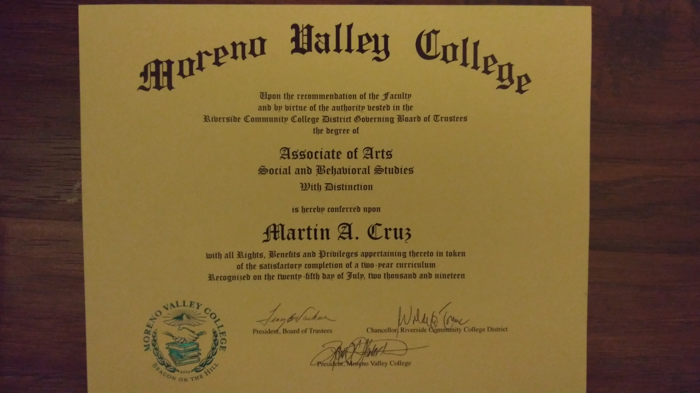

Martin Cruz
In my experiences as a college student, the pace of progression was one that varied throughout the years. At first, I had planned to major in Communication Studies, resulting in the background I have on the field of study on my college transcript and my associates degrees. The choice in Communication Studies as my major at the time was a result in another interest I have in writing, leading me to pursue a career in journalism. However, this plan had fell through, thus having to configure a new plan of action in a field of study that I believed to be more fruitful than the former. The thought of taking up English as my major came to me when considering my interests and passions, which included helping others and contributing to society. While most community college students finish their degree or what ever certification of completion they acquire within two years, this was not the case for me. As stated before, my pace of progression in my first couple years at Moreno Valley College were slow due to being both a part time student and remaining with an undeclared major along with the following year involving my time as a Communication Studies major. This resulted in a sort of two year delay due to having to figure out where my life and career choices would lead me to.
Though before my process of transferring to University of California Riverside, the two years prior involved various instances of overcoming obstacles in my concluding semesters as a community college student. In a sense, I was working through two transitions at the same time at one point, with the first involving my newly adopted major and the latter being applying to a university to transfer into in order to complete my Bachelor's Degree. Being a new English major had both pros and cons, involving heavier loads of reading and writing, but they were worth it due to the lack of limitation I had to express my thoughts and ideas through what I wrote. I eventually felt more welcome with my newly found colleagues in this field of study. As time went on, I put my focuses on things that would open doors for opportunities in the future, such as enrolling in a tutor training course and becoming a writing consultant at my community college. In a sense, I accomplished various things while having to apply for my transfer university. In the end of my time as a community college student, the various tasks and accomplishments I had involved myself served as a sort of preparation for what was to come in the near future as a UCR student as well as the opportunities that could come my way.
As an undergraduate at University of California Riverside, I had sought out to complete my degree in English for various reasons. These reasons include having an interest and a passion for the subject as well as it stemming from my background as an ESL student when I began my academic career. I felt as thought my proficiency and skill in the subject could be used as a way to be the mentor I once needed for other students to succeed. With my backgroundground and familiarity in English as a Second Language (ESL), I have developed an understanding for students who were once in my shoes and want nothing more but for these students to improve in their academic goals by serving as a scaffolding for them in the obstacle of learning a new language and make the learning experience a better and memorable one. My goal as an instructor is to provide support and knowledge not only for students that fall under the ESL category, but also those who are in need of regular single subject English as well. With my studies in the subject of English ranging from literary genres to the evolution of the language itself, I believe that I have significance in my studies and the skills I have to offer.
Experience
Teaching Assistant
• Grading assignments issued by the professr
• Assigning supplemental assignments pertaining to the overall class lectures
• Conduct in depth and engaging discussion with students
Library Security Monitor
• Patrolling the floors of the libary and maintaining the peace
• Monitoring hourly statistics of patrons
Writing Consultant
• Provide assistance for students in their assignments
• Helping students find their writing voice
• Providng a comfortable and sustained area for students to tend to their assignments
Onewheel Club Officer Member
• Tend to bi-weekly meetings
• Ensure safety of members
• Provide Onewheel riding lessons
Education
California State University San Bernardino
University of California Riverside
Moreno Valley College
Portfolio
